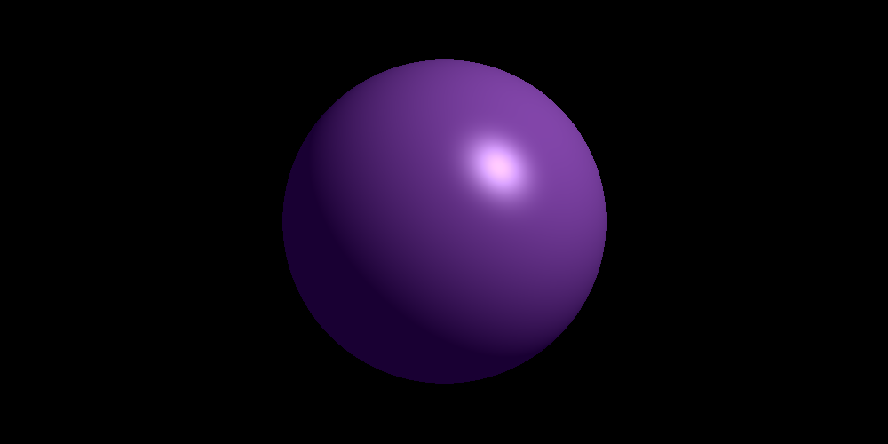
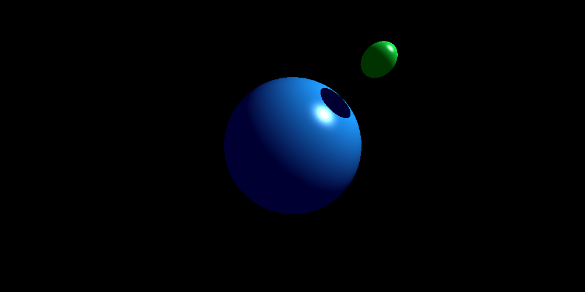
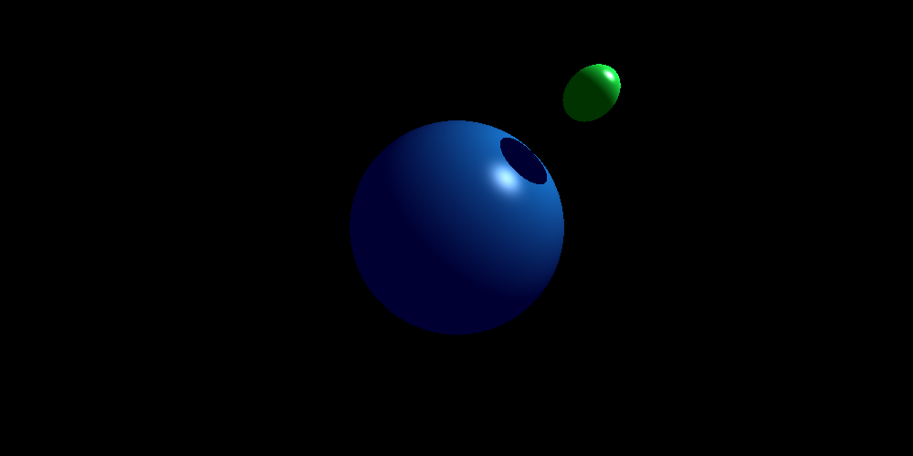
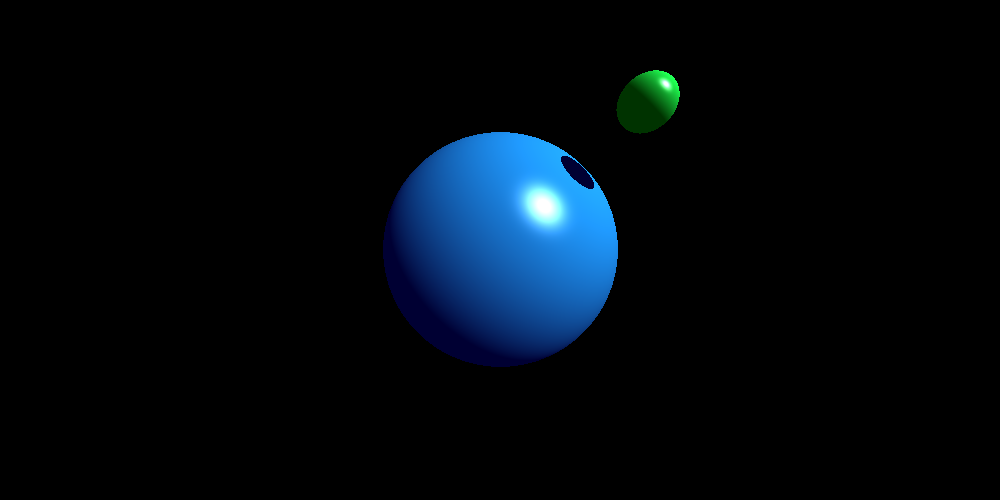
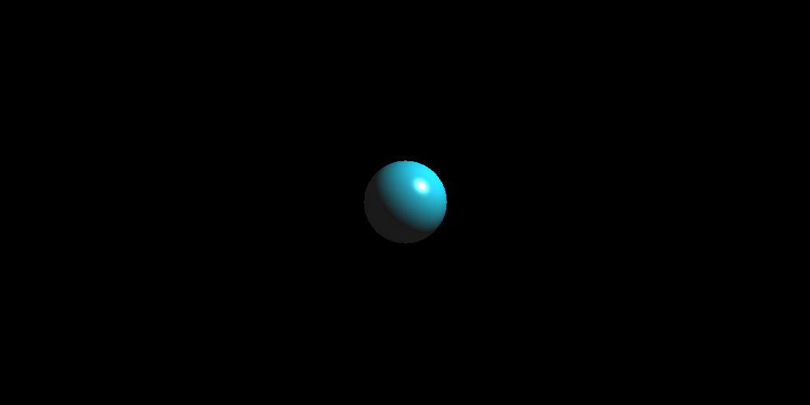
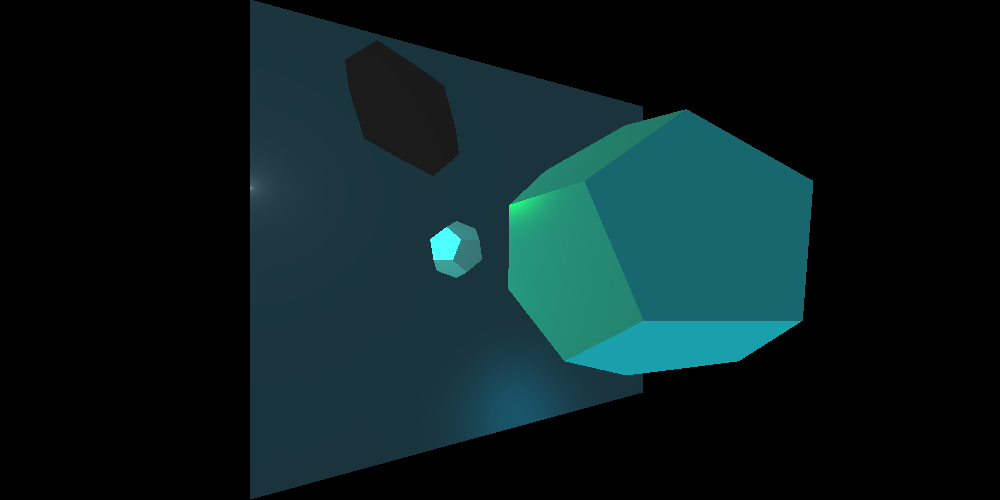
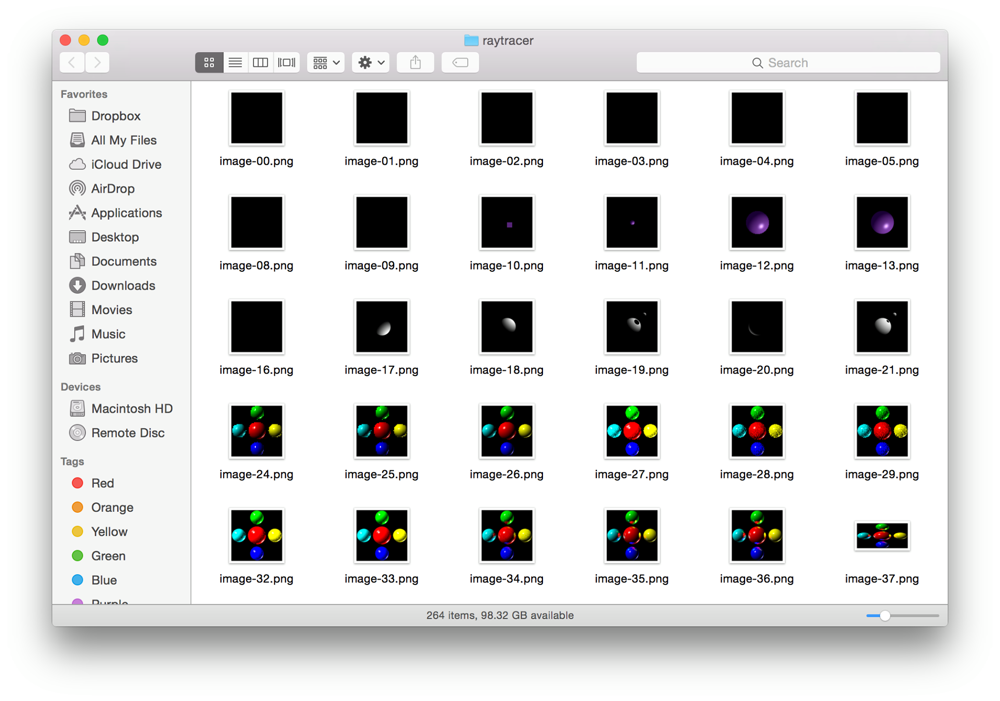

Assignment 2
This assignment was done in collaboration with Casey Currey-Wilson.The goal of this assignment is to implement a raytracer that can trace both spheres and polygons using Phong shading that supports shadows, reflections, linear transformations on objects, and saves the rendered image into a image file. Below are images that show examples demonstrating these options.
Unlike the previous assignment, the only command line argument that you can pass in is a text file name. The program will read instructions from that text file, since it's likely to have a large amount of commands at once.
|  |
|
Basic Phong shading of a sphere. input-00.txt 19.1162052155 sec |
|  |
|
Shadow of a sphere on another sphere from a point light, with no falloff. input-01.txt 17.4989938736 sec |
|  |
|
Shadow of a sphere on another sphere from a point light, with linear falloff. input-02.txt 17.5297920704 sec |
|
Shadow of a sphere on another sphere from a point light, with quadratic falloff. input-03.txt 18.3793301582 sec |
|  |
|
Shadow of a sphere on another sphere from a directional light. input-04.txt 17.3179521561 sec |
|
Shadow of a sphere on a triangle. input-05.txt 38.5402169228 sec |
|
Spheres reflecting each other with a recursion depth of 3. input-06.txt 33.1157798767 sec |
|
A set of spheres and a reflective triangle. input-07.txt 52.1394910812 sec |
|  |
|
A single sphere. input-08.txt 13.339828968 sec |
|
A single sphere with scaling. input-09.txt 30.8666820526 sec |
|
A single sphere with scaling and translation. input-10.txt 33.4214379787 sec |
|
A single sphere with scaling, translation, and rotation. input-11.txt 33.6132218838 sec |
|
A pretty trippy flower. ⚘ input-12.txt 266.844189882 sec |
|
Triangle from OBJ file with interpolated vertex normals and Phong shading. input-13.txt 49.2965290546 sec |
|  |
|
A dodecahedron OBJ with point and directional light reflected against a quadrilateral background. input-14.txt 2467.05825496 sec |
For future improvements, implement an AABB tree to help render faster. (Right now it's ridiculously slow which makes me sad because I really wanted to make some pretty pictures from pretty .obj files.)
Extra Credit
For extra credit, we implemented a variety of features that allow more versatility in image saving.Image Format: imf ext
Specifies the image output format, where ext can be 'png', 'tif', or 'jpg'. The default is png.
Image Size: ssz w h
Specifies the image's dimensions, where w and h are positive integers. The default is 1000x500.
Image Filename Saving System:
All saved images are named "image-nn.xxx" where nn is a number (01, 02, etc.) an xxx is an extention. When saving, the program first checks to see if a certain filename is already taken, so that each tim running the program will output images with incrementing filenames.

Text File: txt des
Output a text file along with the image file named "notes-nn" where nn corresponds to the image's filename's nn, where des can be anything, and can also be left blank. The file will contain the command line input for the image, the amount of time it took the program to run when tracing that image, and the provided description.
Sources/References Used
Raytracer Implementation Journal - Used as general implemenation guide and for various sample examples.CS 184 Discussion Slides from Stephen Bailey, Feb. 26
Pillow - Imaging library
NumPy - Used for solving systems of equations and inverting matrices.
Loading Wavefront OBJ files with Python - OBJ parser reference code.
Tutorial 7 : Model loading - OBJ parser tutorial
Python Program to Multiply Two Matrices - Matrix multiplication code using nested list comprehension
Simple Examples from cs184-cz
dodecahedron.obj - A OBJ file containing a dodecahedron that we used for one of our examples.